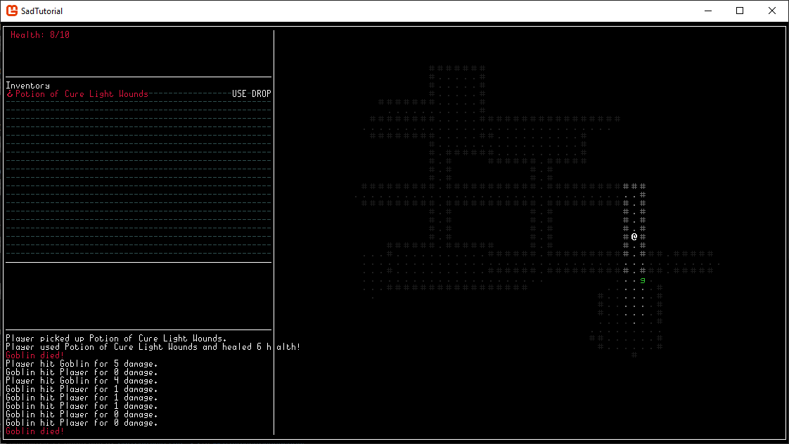

Now we've got enemies to fight and a map to explore, all we need are some tools to survive. To that end, this chapter we'll be creating an inventory system and adding some health potions that can spawn on the ground around the map.
1. What is an Item
Before we can think about an inventory system, we need to define what an item is. Create a file in Data called Item.cs. Since it needs a position and to be rendered, we can have it inherit from Entity. The only other things we currently need to track on it are an identifier string so we know how to use it, and we'll also have a dice string, for anything we want a variable effect on.
namespace SadTutorial.Data {
public class Item : Entity {
public string UseID = "";
public string UseDice = "";
public Item(string n, int g, Color c, int x, int y) : base(n, g, c, x, y) {
}
}
}
2. Spawning Items
Let's start by creating a centralized room populating function. Delete PlaceMonsters (but save the code) and the call to it in Program, then in ActorAt check to see if World and Player are null before checking Player position for a collision. Create a new function in Map that takes a Rectangle called PopulateRoom. Call it after the call to ApplyRoom, at the end of the for-loop where we create and place the room in the map. Place our old code from PlaceMonsters into PopulateRoom, with the x and y values changed to be random from 0 to room.Width or room.Height, then add the room.X or Y. Additionally change the number from 30 monsters to something much lower like 3 or 5, as this is the number of monsters that will spawn in the room. Next duplicate the code, creating and placing Items instead. Rather than setting the stats, set our UseID to "Heal" and the UseDice to "1d8+1". The name should be Potion of Cure Light Wounds, the glyph 168, and the color Crimson (or your favorite shade of red). Create a List<Item> in Map and add the items to it as we create and place them. Finally, in UI_GameArea draw all items on the map the same way we drew all monsters. Now you should be able to launch the game and see groups of monsters and occasionally potions in each room!
public void PopulateRoom(Rectangle room) {
int monsters = GameSettings.rand.Next(5);
for (int j = 0; j < monsters; j++) {
int x = GameSettings.rand.Next(room.Width) + room.X;
int y = GameSettings.rand.Next(room.Height) + room.Y;
while (TileAt(x, y) == null || TileAt(x, y).BlocksMove || ActorAt(x, y) != null) {
x = GameSettings.rand.Next(room.Width) + room.X;
y = GameSettings.rand.Next(room.Height) + room.Y;
}
Actor goblin = new("Goblin", 'g', Color.LimeGreen, x, y);
goblin.SetStats(5, "1d2-1");
Monsters.Add(goblin);
}
int items = GameSettings.rand.Next(3);
for (int j = 0; j < items; j++) {
int x = GameSettings.rand.Next(room.Width) + room.X;
int y = GameSettings.rand.Next(room.Height) + room.Y;
while (TileAt(x, y) == null || TileAt(x, y).BlocksMove || ActorAt(x, y) != null) {
x = GameSettings.rand.Next(room.Width) + room.X;
y = GameSettings.rand.Next(room.Height) + room.Y;
}
Item potion = new("Potion of Cure Light Wounds", 168, Color.Crimson, x, y);
potion.UseID = "Heal";
potion.UseDice = "1d8+1";
Items.Add(potion);
}
}
3. Inventory
Before we worry about drawing it for the player, we need to create the actual inventory variable. In Data/Actor create a List<Item> called Inventory. Next go to UI/UI_GameArea and scroll to the sidebar area of Update. Bisect the empty middle space with a horizontal line at Y26, then print "Inventory" at Y6, followed by iterating up to 20 and printing the names of Inventory items, while that is below the Count of the Inventory. Before printing the name, draw a line across the space in something dark like DarkSlateGray, because we'll put our use and drop buttons on the right, and we need a way to easily see which item we're manipulating. Additionally, print the item's appearance on the same line as its name to spice it up a bit. The additions to the Update code should look like the following:
Con.DrawLine(new Point(0, 5), new Point(53, 5), 196);
Con.Print(0, 6, "Inventory");
for (int i = 0; i < 20; i++) {
Con.DrawLine(new Point(0, 7 + i), new Point(53, 7 + i), '-', Color.DarkSlateGray);
if (i < GameSettings.World.Player.Inventory.Count) {
Item item = GameSettings.World.Player.Inventory[i];
Con.Print(0, 7 + i, new ColoredString("| ") + new ColoredString(item.Name, item.GetAppearance().First().Foreground, Color.Black));
SquareCon.Print(0, 7 + i, item.GetAppearance());
}
}
Con.DrawLine(new Point(0, 27), new Point(53, 27), 196);
Con.DrawLine(new Point(0, 35), new Point(53, 35), 196);
4. Picking Up Items
To pick up items we first need a way to detect whether there's an item where we're standing. Go to Data/Map and add an ItemAt function that does much the same as ActorAt, though of course we don't need to return the player. Next go to Data/Actor and add a function called TryPickup that takes and returns nothing, since we can access everything we need without passing arguments. Check to see if there's an item where the player is standing, then if so, see if the players Inventory currently has a Count of less than 20, then finally add it to the Inventory and remove it from CurrentMap.Items if there's inventory space. Add a log message to indicate the pickup was successful and a message if it failed explaining why if it was the player who tried to pick up something.
public void TryPickup() {
Item? item = GameSettings.World.CurrentMap.ItemAt(X, Y);
if (item != null && Inventory.Count < 20) {
Inventory.Add(item);
GameSettings.World.CurrentMap.Items.Remove(item);
GameSettings.UIManager.GameArea.AddMessage(Name + " picked up " + item.Name + ".");
}
else if (Inventory.Count == 20 && this is Player) {
GameSettings.UIManager.GameArea.AddMessage(new ColoredString("Your inventory is too full to pick that up.", Color.Crimson, Color.Black));
}
}
5. Using and Dropping Items
It's been a long chapter but we're almost done! Create a new file in the root of your project directory called ItemManager. Set it to a static class, then add a static function called TryUseItem that takes an Item and an Actor, and returns a bool. For now just check to see if the item.UseID is "Heal", then use GoRogue.DiceNotation.Dice.Roll to roll item.UseDice to get the healing amount, then add it to the user.CurrentHP (capped at user.MaxHP) and log that they used it. Finally remove the item from their inventory, then return true. At the end of the function return false, as if we reach that we must not have used the item.
public static bool TryUseItem(Item item, Actor user) {
if (item.UseID == "Heal") {
int healAmount = GoRogue.DiceNotation.Dice.Roll(item.UseDice);
user.CurrentHP = Math.Clamp(user.CurrentHP + healAmount, 0, user.MaxHP);
GameSettings.UIManager.GameArea.AddMessage(user.Name + " used " + item.Name + " and healed " + healAmount + "!");
user.Inventory.Remove(item);
return true;
}
return false;
}
Back in UI/UI_GameArea where we print the name of the item, create a bool called countChanged and set it to false. Check to see if the item.UseID isn't "" (an empty string), and if so Print a Clickable string that says "USE" at 46,7+i with a lambda function that calls TryUseItem on the item and Player. If it succeeds, set countChanged to true. After this block do a PrintClickable for every item that says "DROP" at 50,7+i. Check to see if there's an item where the player is already and fail out if so (logging a message to explain why). Otherwise set the item.X and Y to the Players coordinates, add it to the CurrentMap.Items, remove it from Player.Inventory, and set countChanged to true. Finally after that check to see if countChanged is true and if so break out of the for-loop to print the inventory. Because we're changing the length of the collection, it'll crash the game when an item is dropped/used if we don't do this.
6. Conclusion
Now you should have a map where enemies and items spawn in rooms, you can fight the enemies, pick up the potions, and use the potions to heal. You can also optionally drop the potions back onto the map. Your screen should now look something like the following. You may note that the log messages are getting quite lengthy and might expand past their bounds - we'll fix that next chapter. Looking more and more like a game with every chapter!

using GoRogue.MapViews;
using SadAdditions;
using SadConsole.Input;
using SadTutorial.Data;
namespace SadTutorial.UI {
public class UI_GameArea : InstantUI {
public List MessageLog = new();
public UI_GameArea(int width, int height) : base(width, height, "") {
Win.IsVisible = true;
Win.Position = new Point(0, 0);
Win.CanDrag = false;
}
public override void Update() {
Win.Clear();
Extensions.DrawBox(Win, 0, 0, Win.Width - 2, Win.Height - 2);
Con.Clear();
SquareCon.Clear();
DoubleSquareCon.Clear();
// Sidebar
Con.Print(1, 0, "Health: " + GameSettings.World.Player.CurrentHP + "/" + GameSettings.World.Player.MaxHP, Color.Crimson);
Con.DrawLine(new Point(0, 5), new Point(53, 5), 196);
Con.Print(0, 6, "Inventory");
for (int i = 0; i < 20; i++) {
Con.DrawLine(new Point(0, 7 + i), new Point(53, 7 + i), '-', Color.DarkSlateGray);
if (i < GameSettings.World.Player.Inventory.Count) {
Item item = GameSettings.World.Player.Inventory[i];
Con.Print(0, 7 + i, new ColoredString("| ") + new ColoredString(item.Name, item.GetAppearance().First().Foreground, Color.Black));
SquareCon.Print(0, 7 + i, item.GetAppearance());
bool countChanged = false;
if (item.UseID != "") {
Con.PrintClickable(46, 7 + i, "USE", () => {
if (ItemManager.TryUseItem(item, GameSettings.World.Player)) {
countChanged = true;
}
});
}
Con.PrintClickable(50, 7 + i, "DROP", () => {
if (GameSettings.World.CurrentMap.ItemAt(GameSettings.World.Player.X, GameSettings.World.Player.Y) == null) {
item.X = GameSettings.World.Player.X;
item.Y = GameSettings.World.Player.Y;
GameSettings.World.CurrentMap.Items.Add(item);
GameSettings.World.Player.Inventory.Remove(item);
countChanged = true;
} else {
AddMessage("There's already an item here!");
}
});
if (countChanged)
break;
}
}
Con.DrawLine(new Point(0, 27), new Point(53, 27), 196);
Con.DrawLine(new Point(0, 35), new Point(53, 35), 196);
for (int i = 0; i < MessageLog.Count && i < 15; i++) {
Con.Print(0, 36 + i, MessageLog[i]);
}
// End Sidebar
Con.DrawLine(new Point(54, 0), new Point(54, 48), 179);
for (int x = 0; x < GameSettings.World.CurrentMap.Width; x++) {
for (int y = 0; y < GameSettings.World.CurrentMap.Height; y++) {
Tile tile = GameSettings.World.CurrentMap.TileAt(x, y);
if (tile != null) {
if (GameSettings.World.PlayerFOV.CurrentFOV.Contains(new GoRogue.Coord(x, y)))
SquareCon.Print(32 + x, y, tile.GetAppearance());
else if (GameSettings.World.SeenTiles.Contains(new GoRogue.Coord(x, y)))
SquareCon.Print(32 + x, y, tile.GetAppearance().GetDarker().GetDarker());
}
}
}
foreach (var mon in GameSettings.World.CurrentMap.Monsters) {
if (GameSettings.World.PlayerFOV.CurrentFOV.Contains(new GoRogue.Coord(mon.X, mon.Y))) {
SquareCon.Print(32 + mon.X, mon.Y, mon.GetAppearance());
}
}
foreach (var item in GameSettings.World.CurrentMap.Items) {
if (GameSettings.World.PlayerFOV.CurrentFOV.Contains(new GoRogue.Coord(item.X, item.Y))) {
SquareCon.Print(32 + item.X, item.Y, item.GetAppearance());
}
}
SquareCon.Print(32 + GameSettings.World.Player.X, GameSettings.World.Player.Y, GameSettings.World.Player.GetAppearance());
}
public override void Input() {
int dx = 0;
int dy = 0;
if (Shorthands.KeyPressed(Keys.W)) { dy = -1; }
if (Shorthands.KeyPressed(Keys.S)) { dy = 1; }
if (Shorthands.KeyPressed(Keys.A)) { dx = -1; }
if (Shorthands.KeyPressed(Keys.D)) { dx = 1; }
if (dx != 0 || dy != 0) {
GameSettings.World.Player.TryMove(dx, dy);
Point step;
int monCount = GameSettings.World.CurrentMap.Monsters.Count;
foreach (var mon in GameSettings.World.CurrentMap.Monsters) {
if (GameSettings.World.PlayerFOV.CurrentFOV.Contains(new GoRogue.Coord(mon.X, mon.Y))) {
step = Lines.GetLine(new Point(mon.X, mon.Y), new Point(GameSettings.World.Player.X, GameSettings.World.Player.Y)).ToList()[1];
mon.TryMove(step.X - mon.X, step.Y - mon.Y);
}
if (monCount != GameSettings.World.CurrentMap.Monsters.Count)
break;
}
GameSettings.World.UpdateFOV();
}
if (Shorthands.KeyPressed(Keys.G)) { GameSettings.World.Player.TryPickup(); }
}
public void AddMessage(string str) {
AddMessage(new ColoredString(str));
}
public void AddMessage(ColoredString str) {
MessageLog.Insert(0, str);
}
}
}
namespace SadTutorial.Data {
public class Actor : Entity {
public int CurrentHP = 0;
public int MaxHP = 0;
public string DamageDice = "";
public List Inventory = new();
public Actor(string name, int glyph, Color col, int x, int y) : base(name, glyph, col, x, y) {
}
public void TryMove(int dx, int dy) {
Tile? dest = GameSettings.World.CurrentMap.TileAt(X + dx, Y + dy);
Actor? blocker = GameSettings.World.CurrentMap.ActorAt(X + dx, Y + dy);
if (dest != null && !dest.BlocksMove) {
if (blocker != null) {
blocker.TakeDamage(GoRogue.DiceNotation.Dice.Roll(DamageDice), this);
}
else {
X += dx;
Y += dy;
}
}
}
public void TryPickup() {
Item? item = GameSettings.World.CurrentMap.ItemAt(X, Y);
if (item != null && Inventory.Count < 20) {
Inventory.Add(item);
GameSettings.World.CurrentMap.Items.Remove(item);
GameSettings.UIManager.GameArea.AddMessage(Name + " picked up " + item.Name + ".");
}
else if (Inventory.Count == 20 && this is Player) {
GameSettings.UIManager.GameArea.AddMessage(new ColoredString("Your inventory is too full to pick that up.", Color.Crimson, Color.Black));
}
}
public void SetStats(int hp, string dmg) {
MaxHP = hp;
CurrentHP = hp;
DamageDice = dmg;
}
public void TakeDamage(int amt, Actor attacker) {
CurrentHP -= amt;
GameSettings.UIManager.GameArea.AddMessage(attacker.Name + " hit " + Name + " for " + amt + " damage.");
if (CurrentHP <= 0) {
if (this is Player) {
} else {
GameSettings.World.CurrentMap.Monsters.Remove(this);
GameSettings.UIManager.GameArea.AddMessage(new ColoredString(Name + " died!", Color.Crimson, Color.Black));
}
}
}
}
}
using SadTutorial.Data;
namespace SadTutorial {
public static class ItemManager {
public static bool TryUseItem(Item item, Actor user) {
if (item.UseID == "Heal") {
int healAmount = GoRogue.DiceNotation.Dice.Roll(item.UseDice);
user.CurrentHP = Math.Clamp(user.CurrentHP + healAmount, 0, user.MaxHP);
GameSettings.UIManager.GameArea.AddMessage(user.Name + " used " + item.Name + " and healed " + healAmount + "!");
user.Inventory.Remove(item);
return true;
}
return false;
}
}
}